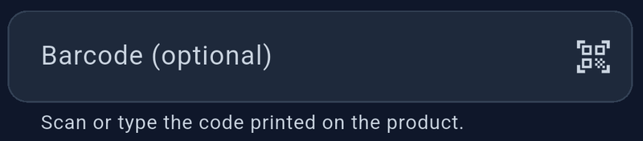

Assign a barcode


- Add or edit a product.
- Type the code in the barcode field, or tap its camera button.
- If prompted, allow camera access.
- Position one barcode clearly in view.
- Save the product.
Keep any leading zeros when typing a code. StockLite preserves them. A barcode must be unique across products. To remove an assignment, clear the barcode field and save.
Scan while selling
- Open New sale.
- Tap Scan barcode.
- Scan a barcode already assigned to a product.
- Check that one unit of the matching product was added to the cart.
- Scan again to add another unit, or adjust the cart quantity.
Scanning does not create an unknown product automatically. An unrecognized or ambiguous code leaves the cart unchanged. The product must have sufficient stock.
The sale search also accepts barcode text. If the camera is unavailable or permission is denied, use the scanner’s manual-entry option. For reliable scanning, use good lighting and keep only one barcode in view.